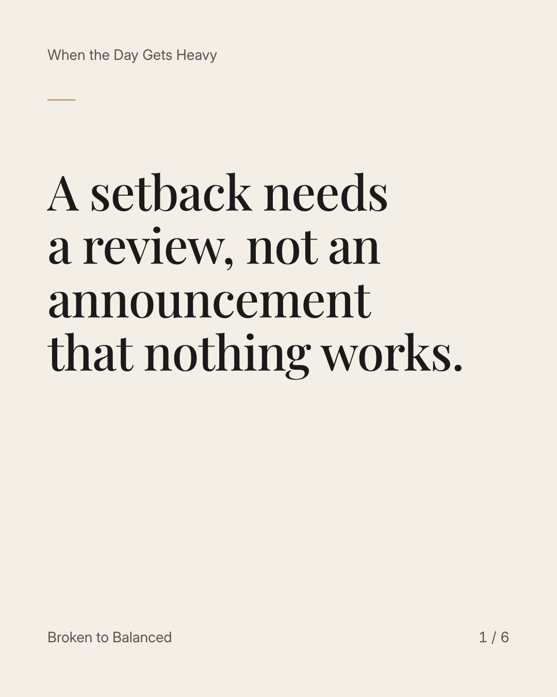
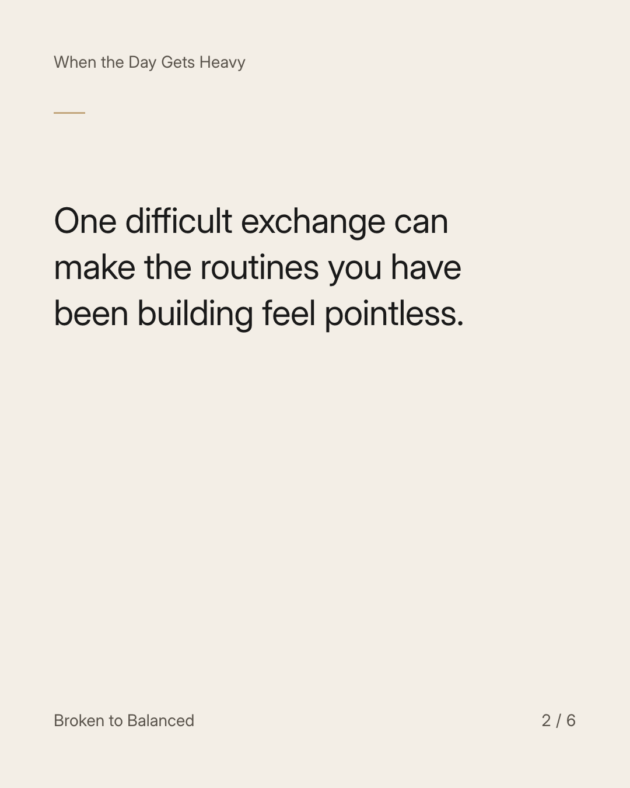
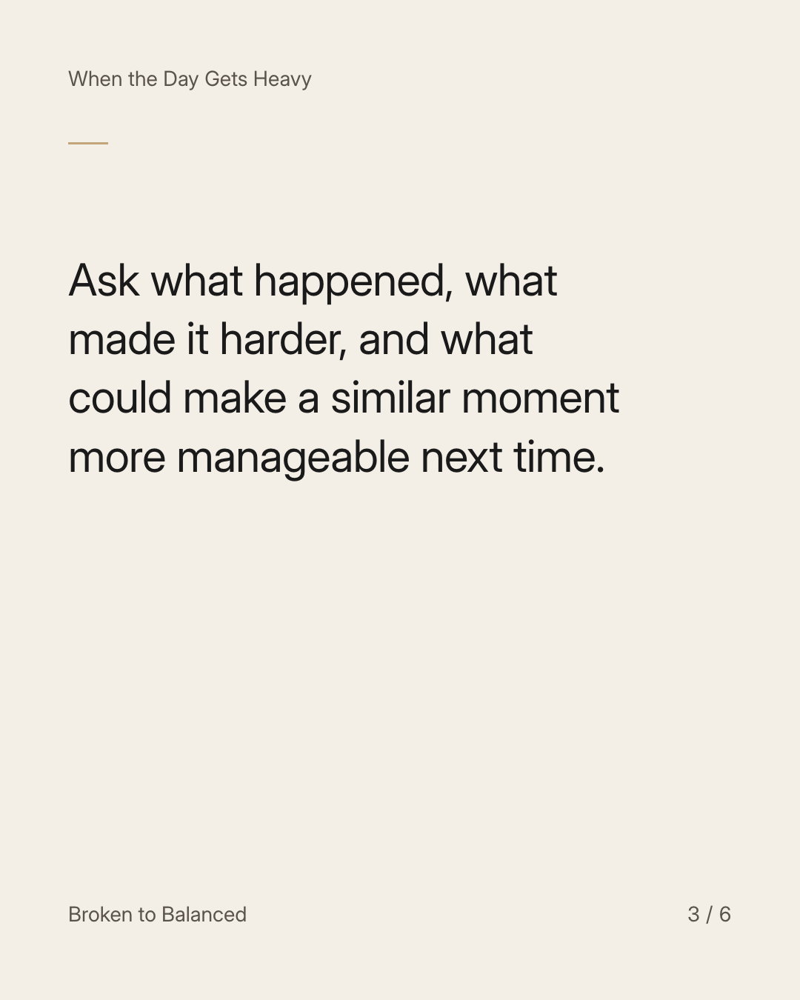
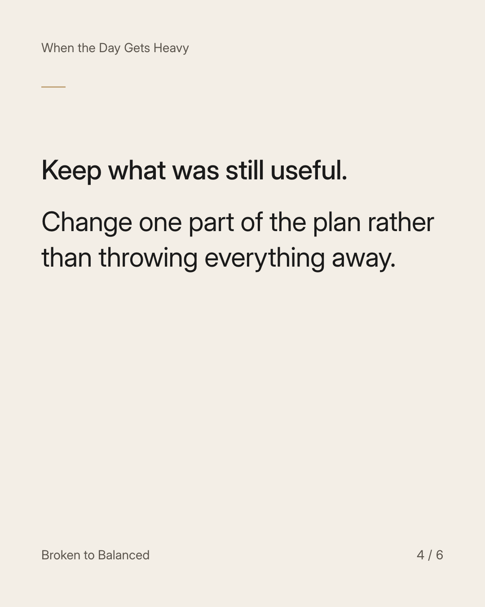
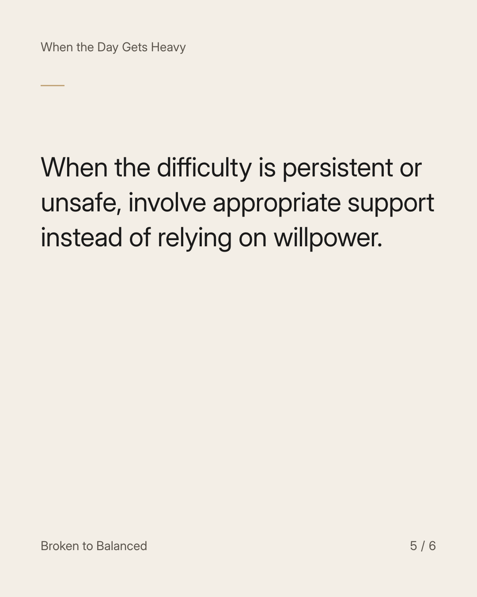
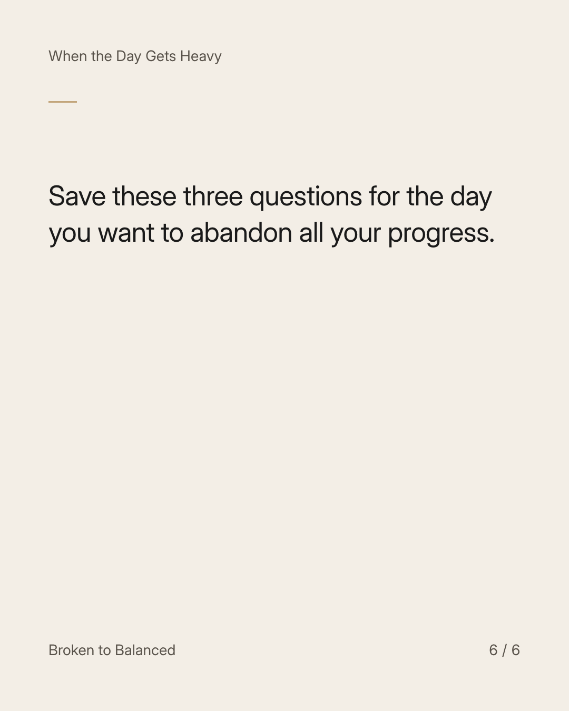

Exact text and accessibility text
A setback needs a review, not an announcement that nothing works.
Slide 1 of 6. A setback needs a review, not an announcement that nothing works.


Exact text and accessibility text
One difficult exchange can make the routines you have been building feel pointless.
Slide 2 of 6. One difficult exchange can make the routines you have been building feel pointless.


Exact text and accessibility text
Ask what happened, what made it harder, and what could make a similar moment more manageable next time.
Slide 3 of 6. Ask what happened, what made it harder, and what could make a similar moment more manageable next time.


Exact text and accessibility text
Keep what was still useful. Change one part of the plan rather than throwing everything away.
Slide 4 of 6. Keep what was still useful. Change one part of the plan rather than throwing everything away.


Exact text and accessibility text
When the difficulty is persistent or unsafe, involve appropriate support instead of relying on willpower.
Slide 5 of 6. When the difficulty is persistent or unsafe, involve appropriate support instead of relying on willpower.


Exact text and accessibility text
Save these three questions for the day you want to abandon all your progress.
Slide 6 of 6. Save these three questions for the day you want to abandon all your progress.
Exact caption
Plain-text fallback: select and copy the caption.